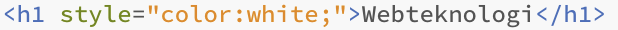
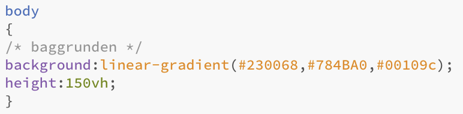

Projektbeskrivelse
The point of our experiment is to test which plants are able to grow, given the external factors measured by the astropi’s sensors. We are gonna create a list of plants that are safe for consumption, with information about the temperature and humidity required for optimal plant growth for each of the listed plants. By comparing them with our measured data of temperature and humidity on the spacestation from the astro-pi’s sensors, we can determine which plants are able to grow in the environment on the space station. This can give us a better knowledge of becoming self-sufficient in space. We are gonna start out with using a smaller list of plants, about 2-3 different plants. as proof of concept, as having a longer list increases the chance of the experiment failing

ESA’s specifikationer
I ESA’s specifikationer er der givet følgende krav til projektet: “Must not require any additional equipment or access to anything else on the ISS.” Dette krav til projektet har været problematisk for vores ønskede eksperiment, da der er en vis usikkerhed i temperatursensorers præcision. Vi har gjort os nogle overvejelser og er kommet til den konklusion at det nemmeste var at trække differencen fra på dataen for planterne.
Nødvendige sensorer for udførelse af vores eksperimen
The two sensors we will be using for the experiment are the Temperature sensor. We've also concluded the temperature from the senseHat isn't accurate enough for the experiment. We are also gonna use the data from the humidity sensor. We are gonna use the pi’s processor temperature sensor to compensate for the heat it transfers to our senseHat. We do this since the temperature of the pi’s components impact our sensor's result. We've concluded the temperature from the senseHat isn't accurate enough for the experiment. We are also gonna use the data from the humidity sensor.

Temperatursensoren
...
